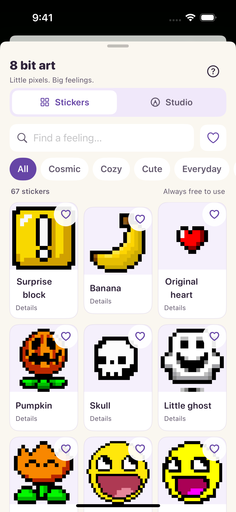

Open the full app
Install 8 bit art from the App Store, then open a conversation in Messages.
- Tap Plus (+) beside the message field.
- Choose 8 bit art in the app list. Swipe up or tap More if needed.
Look for the Stickers and Studio tabs. The question mark opens Help.

Choosing Stickers in the Messages app list opens Apple’s sticker drawer, where you can browse the included pack. For search, favorites or the editor, go back to the app list and choose 8 bit art.
On older supported versions, tap Apps beside the message field and swipe through the iMessage app drawer. Apple’s guide to finding iMessage apps
Use the free stickers
Browse all 67 designs, search for a word like “cat”, or tap the heart on a design to save it to Favorites. Tap the sticker itself to add it to the composer, then tap Send when you’re ready. To place one on a message or photo, touch and hold the sticker and drag it into position.
Make a sticker with Studio
Studio Unlock is a permanent, one-time purchase for the 16 × 16 editor, 45 remix templates, saved drawings and transparent PNG export. The US price is US$1.00. Apple shows the price for your storefront before you buy.
Open Studio for a blank drawing. To remix an included design, open Details & remix under a tiny sticker such as Henlo, then choose Make it yours. After drawing, tap Insert sticker to add your creation to the composer.
Restore Studio Unlock
- Use the Apple Account that originally bought Studio Unlock for Media & Purchases.
- Open Messages → a conversation → + → 8 bit art.
- Tap the question mark (?) to open Help, then tap Restore Purchases under Studio access.
Purchase and restore use Apple’s services. If the price is unavailable, check your connection and use the price retry button.
Restore recovers access to the tools. Drawings and favorites stay on the device where you made them. Export a PNG of any artwork you want to keep before deleting the app or moving to another device.
If the app is hard to find
8 bit art runs inside Messages on iOS or iPadOS 15 or later. If it is missing from the app list, confirm the download on the App Store and check your Messages app-management settings. If you see only stickers, follow the full app route above.
Still need a hand?
Email seltzer.wisdom7h@icloud.com.
Include your device model, iOS or iPadOS version, app version if available, and a short description of the issue. If you attach a screenshot, remove private messages and contact details first.
Support is provided by mim Armand.